Vector math¶
Introduction¶
This small tutorial aims to be a short and practical introduction to vector math, useful for 3D but also 2D games. Again, vector math is not only useful for 3D but also 2D games. It is an amazing tool once you get the grasp of it and makes programming of complex behaviors much simpler.
It often happens that young programmers rely too much on the incorrect math for solving a wide array of problems, for example using only trigonometry instead of vector of math for 2D games.
This tutorial will focus on practical usage, with immediate application to the art of game programming.
Coordinate systems (2D)¶
Typically, we define coordinates as an (x,y) pair, x representing the horizontal offset and y the vertical one. This makes sense given the screen is just a rectangle in two dimensions. As an example, here is a position in 2D space:
A position can be anywhere in space. The position (0,0) has a name, it’s called the origin. Remember this term well because it has more implicit uses later. The (0,0) of a n-dimensions coordinate system is the origin.
In vector math, coordinates have two different uses, both equally important. They are used to represent a position but also a vector. The same position as before, when imagined as a vector, has a different meaning.
When imagined as a vector, two properties can be inferred, the direction and the magnitude. Every position in space can be a vector, with the exception of the origin. This is because coordinates (0,0) can’t represent direction (magnitude 0).
Direction¶
Direction is simply towards where the vector points to. Imagine an arrow that starts at the origin and goes towards a [STRIKEOUT:position]. The tip of the arrow is in the position, so it always points outwards, away from the origin. Imagining vectors as arrows helps a lot.
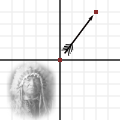Magnitude¶
Finally, the length of the vector is the distance from the origin to the position. Obtaining the length from a vector is easy, just use the Pythagorean Theorem.
var len = sqrt( x*x + y*y )
But… angles?¶
But why not using an angle? After all, we could also think of a vector as an angle and a magnitude, instead of a direction and a magnitude. Angles also are a more familiar concept.
To say truth, angles are not that useful in vector math, and most of the time they are not dealt with directly. Maybe they work in 2D, but in 3D a lot of what can usually be done with angles does not work anymore.
Still, using angles is still not an excuse, even for 2D. Most of what takes a lot of work with angles in 2D, is still much more natural easier to accomplish with vector math. In vector math, angles are useful only as measure, but take little part in the math. So, give up the trigonometry already, prepare to embrace vectors!
In any case, obtaining an angle from a vector is easy and can be accomplished with trig… er, what was that? I mean, the atan2() function.
Vectors in Godot¶
To make examples easier, it is worth explaining how vectors are implemented in GDScript. GDscript has both Vector2 and Vector3, for 2D and 3D math respectively. Godot uses Vector classes as both position and direction. They also contain x and y (for 2D) and x, y and z (for 3D) member variables.
# create a vector with coordinates (2,5)
var a = Vector2(2,5)
# create a vector and assign x and y manually
var b = Vector2()
b.x = 7
b.y = 8
When operating with vectors, it is not necessary to operate on the members directly (in fact this is much slower). Vectors support regular arithmetic operations:
# add a and b
var c = a + b
# will result in c vector, with value (9,13)
It is the same as doing:
var c = Vector2()
c.x = a.x + b.x
c.y = a.y + b.y
Except the former is way more efficient and readable.
Regular arithmetic operations such as addition, subtraction, multiplication and division are supported.
Vector multiplication and division can also be mixed with single-digit numbers, also named scalars.
# multiplication of vector by scalar
var c = a*2.0
# will result in c vector, with value (4,10)
Which is the same as doing
var c = Vector2()
c.x = a.x*2.0
c.y = a.y*2.0
Except, again, the former is way more efficient and readable.
Perpendicular vectors¶
Rotating a 2D vector 90° degrees to either side, left or right, is really easy, just swap x and y, then negate either x or y (direction of rotation depends on which is negated).
Example:
var v = Vector2(0,1)
# rotate right (clockwise)
var v_right = Vector2(v.y, -v.x)
# rotate left (counter-clockwise)
var v_left = Vector2(-v.y, v.x)
This is a handy trick that is often of use. It is impossible to do with 3D vectors, because there are an infinite amount of perpendicular vectors.
Unit vectors¶
Ok, so we know what a vector is. It has a direction and a magnitude. We also know how to use them in Godot. The next step is learning about unit vectors. Any vector with magnitude of length 1 is considered a unit vector. In 2D, imagine drawing a circle of radius one. That circle contains all unit vectors in existence for 2 dimensions:
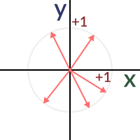So, what is so special about unit vectors? Unit vectors are amazing. In other words, unit vectors have several, very useful properties.
Can’t wait to know more about the fantastic properties of unit vectors, but one step at a time. So, how is a unit vector created from a regular vector?
Normalization¶
Taking any vector and reducing its magnitude to 1.0 while keeping its direction is called normalization. Normalization is performed by dividing the x and y (and z in 3D) components of a vector by its magnitude:
var a = Vector2(2,4)
var m = sqrt(a.x*a.x + a.y*a.y)
a.x /= m
a.y /= m
As you might have guessed, if the vector has magnitude 0 (meaning, it’s not a vector but the origin also called null vector), a division by zero occurs and the universe goes through a second big bang, except in reverse polarity and then back. As a result, humanity is safe but Godot will print an error. Remember! Vector(0,0) can’t be normalized!.
Of course, Vector2 and Vector3 already provide a method to do this:
a = a.normalized()
Dot product¶
OK, the dot product is the most important part of vector math. Without the dot product, Quake would have never been made. This is the most important section of the tutorial, so make sure to grasp it properly. Most people trying to understand vector math give up here because, despite how simple it is, they can’t make head or tails from it. Why? Here’s why, it’s because…
The dot product takes two vectors and returns a scalar:
var s = a.x*b.x + a.y*b.y
Yes, pretty much that. Multiply x from vector a by x from vector b. Do the same with y and add it together. In 3D it’s pretty much the same:
var s = a.x*b.x + a.y*b.y + a.z*b.z
I know, it’s totally meaningless! You can even do it with a built-in function:
var s = a.dot(b)
The order of two vectors does not matter, a.dot(b) returns the
same value as b.dot(a).
This is where despair begins and books and tutorials show you this formula:
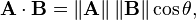And you realize it’s time to give up making 3D games or complex 2D games. How can something so simple be so complex? Someone else will have to make the next Zelda or Call of Duty. Top down RPGs don’t look so bad after all. Yeah I hear someone did pretty well with one of those on Steam…
So this is your moment, this is your time to shine. DO NOT GIVE UP! At this point, this tutorial will take a sharp turn and focus on what makes the dot product useful. This is, why it is useful. We will focus one by one in the use cases for the dot product, with real-life applications. No more formulas that don’t make any sense. Formulas will make sense once you learn what they are useful for.
Siding¶
The first useful and most important property of the dot product is to check what side stuff is looking at. Let’s imagine we have any two vectors, a and b. Any direction or magnitude (neither origin). Does not matter what they are, but let’s imagine we compute the dot product between them.
var s = a.dot(b)
The operation will return a single floating point number (but since we are in vector world, we call them scalar, will keep using that term from now on). This number will tell us the following:
- If the number is greater than zero, both are looking towards the same direction (the angle between them is < 90° degrees).
- If the number is less than zero, both are looking towards opposite direction (the angle between them is > 90° degrees).
- If the number is zero, vectors are shaped in L (the angle between them is 90° degrees).
So let’s think of a real use-case scenario. Imagine Snake is going through a forest, and then there is an enemy nearby. How can we quickly tell if the enemy has seen discovered Snake? In order to discover him, the enemy must be able to see Snake. Let’s say, then that:
- Snake is in position A.
- The enemy is in position B.
- The enemy is facing towards direction vector F.
So, let’s create a new vector BA that goes from the guard (B) to Snake (A), by subtracting the two:
var BA = A - B
Ideally, if the guard was looking straight towards snake, to make eye to eye contact, it would do it in the same direction as vector BA.
If the dot product between F and BA is greater than 0, then Snake will be discovered. This happens because we will be able to tell that the guard is facing towards him:
if (BA.dot(F) > 0):
print("!")
Seems Snake is safe so far.
Siding with unit vectors¶
Ok, so now we know that dot product between two vectors will let us know if they are looking towards the same side, opposite sides or are just perpendicular to each other.
This works the same with all vectors, no matter the magnitude so unit vectors are not the exception. However, using the same property with unit vectors yields an even more interesting result, as an extra property is added:
- If both vectors are facing towards the exact same direction (parallel to each other, angle between them is 0°), the resulting scalar is 1.
- If both vectors are facing towards the exact opposite direction (parallel to each other, but angle between them is 180°), the resulting scalar is -1.
This means that dot product between unit vectors is always between the range of 1 and -1. So Again…
- If their angle is 0° dot product is 1.
- If their angle is 90°, then dot product is 0.
- If their angle is 180°, then dot product is -1.
Uh.. this is oddly familiar… seen this before… where?
Let’s take two unit vectors. The first one is pointing up, the second too but we will rotate it all the way from up (0°) to down (180° degrees)…
While plotting the resulting scalar!
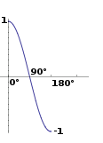Aha! It all makes sense now, this is a Cosine function!
We can say that, then, as a rule…
The dot product between two unit vectors is the cosine of the angle between those two vectors. So, to obtain the angle between two vectors, we must do:
var angle_in_radians = acos( a.dot(b) )
What is this useful for? Well obtaining the angle directly is probably not as useful, but just being able to tell the angle is useful for reference. One example is in the Kinematic Character demo, when the character moves in a certain direction then we hit an object. How to tell if what we hit is the floor?
By comparing the normal of the collision point with a previously computed angle.
The beauty of this is that the same code works exactly the same and without modification in 3D. Vector math is, in a great deal, dimension-amount-independent, so adding or removing an axis only adds very little complexity.
Planes¶
The dot product has another interesting property with unit vectors. Imagine that perpendicular to that vector (and through the origin) passes a plane. Planes divide the entire space into positive (over the plane) and negative (under the plane), and (contrary to popular belief) you can also use their math in 2D:
Unit vectors that are perpendicular to a surface (so, they describe the orientation of the surface) are called unit normal vectors. Though, usually they are just abbreviated as *normals. Normals appear in planes, 3D geometry (to determine where each face or vertex is siding), etc. A normal is a unit vector, but it’s called normal because of its usage. (Just like we call Origin to (0,0)!).
It’s as simple as it looks. The plane passes by the origin and the surface of it is perpendicular to the unit vector (or normal). The side towards the vector points to is the positive half-space, while the other side is the negative half-space. In 3D this is exactly the same, except that the plane is an infinite surface (imagine an infinite, flat sheet of paper that you can orient and is pinned to the origin) instead of a line.
Distance to plane¶
Now that it’s clear what a plane is, let’s go back to the dot product. The dot product between a unit vector and any point in space (yes, this time we do dot product between vector and position), returns the distance from the point to the plane:
var distance = normal.dot(point)
But not just the absolute distance, if the point is in the negative half space the distance will be negative, too:
This allows us to tell which side of the plane a point is.
Away from the origin¶
I know what you are thinking! So far this is nice, but real planes are everywhere in space, not only passing through the origin. You want real plane action and you want it now.
Remember that planes not only split space in two, but they also have polarity. This means that it is possible to have perfectly overlapping planes, but their negative and positive half-spaces are swapped.
With this in mind, let’s describe a full plane as a normal N and a distance from the origin scalar D. Thus, our plane is represented by N and D. For example:
For 3D math, Godot provides a Plane built-in type that handles this.
Basically, N and D can represent any plane in space, be it for 2D or 3D (depending on the amount of dimensions of N) and the math is the same for both. It’s the same as before, but D is the distance from the origin to the plane, travelling in N direction. As an example, imagine you want to reach a point in the plane, you will just do:
var point_in_plane = N*D
This will stretch (resize) the normal vector and make it touch the plane. This math might seem confusing, but it’s actually much simpler than it seems. If we want to tell, again, the distance from the point to the plane, we do the same but adjusting for distance:
var distance = N.dot(point) - D
The same thing, using a built-in function:
var distance = plane.distance_to(point)
This will, again, return either a positive or negative distance.
Flipping the polarity of the plane is also very simple, just negate both N and D. This will result in a plane in the same position, but with inverted negative and positive half spaces:
N = -N
D = -D
Of course, Godot also implements this operator in Plane, so doing:
var inverted_plane = -plane
Will work as expected.
So, remember, a plane is just that and its main practical use is calculating the distance to it. So, why is it useful to calculate the distance from a point to a plane? It’s extremely useful! Let’s see some simple examples..
Constructing a plane in 2D¶
Planes clearly don’t come out of nowhere, so they must be built. Constructing them in 2D is easy, this can be done from either a normal (unit vector) and a point, or from two points in space.
In the case of a normal and a point, most of the work is done, as the normal is already computed, so just calculate D from the dot product of the normal and the point.
var N = normal
var D = normal.dot(point)
For two points in space, there are actually two planes that pass through them, sharing the same space but with normal pointing to the opposite directions. To compute the normal from the two points, the direction vector must be obtained first, and then it needs to be rotated 90° degrees to either side:
# calculate vector from a to b
var dvec = (point_b - point_a).normalized()
# rotate 90 degrees
var normal = Vector2(dvec.y,-dev.x)
# or alternatively
# var normal = Vector2(-dvec.y,dev.x)
# depending the desired side of the normal
The rest is the same as the previous example, either point_a or point_b will work since they are in the same plane:
var N = normal
var D = normal.dot(point_a)
# this works the same
# var D = normal.dot(point_b)
Doing the same in 3D is a little more complex and will be explained further down.
Some examples of planes¶
Here is a simple example of what planes are useful for. Imagine you have a convex polygon. For example, a rectangle, a trapezoid, a triangle, or just any polygon where faces that don’t bend inwards.
For every segment of the polygon, we compute the plane that passes by that segment. Once we have the list of planes, we can do neat things, for example checking if a point is inside the polygon.
We go through all planes, if we can find a plane where the distance to the point is positive, then the point is outside the polygon. If we can’t, then the point is inside.
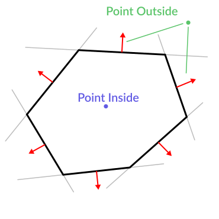Code should be something like this:
var inside = true
for p in planes:
# check if distance to plane is positive
if (N.dot(point) - D > 0):
inside = false
break # with one that fails, it's enough
Pretty cool, huh? But this gets much better! With a little more effort, similar logic will let us know when two convex polygons are overlapping too. This is called the Separating Axis Theorem (or SAT) and most physics engines use this to detect collision.
The idea is really simple! With a point, just checking if a plane returns a positive distance is enough to tell if the point is outside. With another polygon, we must find a plane where all the **other* polygon points* return a positive distance to it. This check is performed with the planes of A against the points of B, and then with the planes of B against the points of A:
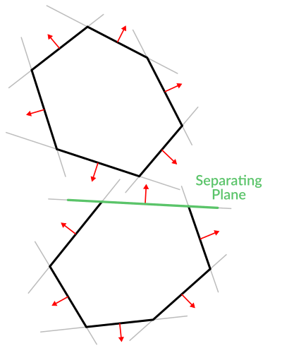Code should be something like this:
var overlapping = true
for p in planes_of_A:
var all_out = true
for v in points_of_B:
if (p.distance_to(v) < 0):
all_out = false
break
if (all_out):
# a separating plane was found
# do not continue testing
overlapping = false
break
if (overlapping):
# only do this check if no separating plane
# was found in planes of A
for p in planes_of_B:
var all_out = true
for v in points_of_A:
if (p.distance_to(v) < 0):
all_out = false
break
if (all_out):
overlapping = false
break
if (overlapping):
print("Polygons Collided!")
As you can see, planes are quite useful, and this is the tip of the iceberg. You might be wondering what happens with non convex polygons. This is usually just handled by splitting the concave polygon into smaller convex polygons, or using a technique such as BSP (which is not used much nowadays).
Cross product¶
Quite a lot can be done with the dot product! But the party would not be complete without the cross product. Remember back at the beginning of this tutorial? Specifically how to obtain a perpendicular (rotated 90 degrees) vector by swapping x and y, then negating either of them for right (clockwise) or left (counter-clockwise) rotation? That ended up being useful for calculating a 2D plane normal from two points.
As mentioned before, no such thing exists in 3D because a 3D vector has infinite perpendicular vectors. It would also not make sense to obtain a 3D plane from 2 points, as 3 points are needed instead.
To aid in this kind stuff, the brightest minds of humanity’s top mathematicians brought us the cross product.
The cross product takes two vectors and returns another vector. The returned third vector is always perpendicular to the first two. The source vectors, of course, must not be the same, and must not be parallel or opposite, else the resulting vector will be (0,0,0):
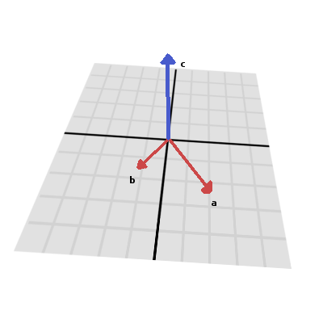The formula for the cross product is:
var c = Vector3()
c.x = (a.y * b.z) - (a.z * b.y)
c.y = (a.z * b.x) - (a.x * b.z)
c.z = (a.x * b.y) - (a.y * b.x)
This can be simplified, in Godot, to:
var c = a.cross(b)
However, unlike the dot product, doing a.cross(b) and b.cross(a)
will yield different results. Specifically, the returned vector will be
negated in the second case. As you might have realized, this coincides
with creating perpendicular vectors in 2D. In 3D, there are also two
possible perpendicular vectors to a pair of 2D vectors.
Also, the resulting cross product of two unit vectors is not a unit vector. Result will need to be renormalized.
Area of a triangle¶
Cross product can be used to obtain the surface area of a triangle in 3D. Given a triangle consisting of 3 points, A, B and C:
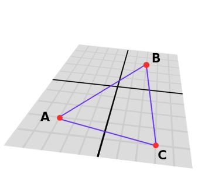Take any of them as a pivot and compute the adjacent vectors to the other two points. As example, we will use B as a pivot:
var BA = A - B
var BC = C - B
Compute the cross product between BA and BC to obtain the perpendicular vector P:
var P = BA.cross(BC)

The length (magnitude) of P is the surface area of the parallelogram built by the two vectors BA and BC, therefore the surface area of the triangle is half of it.
var area = P.length()/2
Plane of the triangle¶
With P computed from the previous step, normalize it to get the normal of the plane.
var N = P.normalized()
And obtain the distance by doing the dot product of P with any of the 3 points of the ABC triangle:
var D = P.dot(A)
Fantastic! You computed the plane from a triangle!
Here’s some useful info (that you can find in Godot source code anyway). Computing a plane from a triangle can result in 2 planes, so a sort of convention needs to be set. This usually depends (in video games and 3D visualization) to use the front-facing side of the triangle.
In Godot, front-facing triangles are those that, when looking at the camera, are in clockwise order. Triangles that look Counter-clockwise when looking at the camera are not drawn (this helps to draw less, so the back-part of the objects is not drawn).
To make it a little clearer, in the image below, the triangle ABC appears clock-wise when looked at from the Front Camera, but to the Rear Camera it appears counter-clockwise so it will not be drawn.
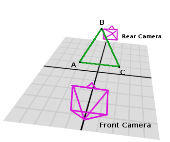Normals of triangles often are sided towards the direction they can be viewed from, so in this case, the normal of triangle ABC would point towards the front camera:
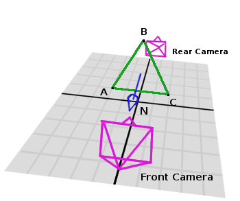So, to obtain N, the correct formula is:
# clockwise normal from triangle formula
var N = (A-C).cross(A-B).normalized()
# for counter-clockwise:
# var N = (A-B).cross(A-C).normalized()
var D = N.dot(A)
Collision detection in 3D¶
This is another bonus bit, a reward for being patient and keeping up with this long tutorial. Here is another piece of wisdom. This might not be something with a direct use case (Godot already does collision detection pretty well) but It’s a really cool algorithm to understand anyway, because it’s used by almost all physics engines and collision detection libraries :)
Remember that converting a convex shape in 2D to an array of 2D planes was useful for collision detection? You could detect if a point was inside any convex shape, or if two 2D convex shapes were overlapping.
Well, this works in 3D too, if two 3D polyhedral shapes are colliding, you won’t be able to find a separating plane. If a separating plane is found, then the shapes are definitely not colliding.
To refresh a bit a separating plane means that all vertices of polygon A are in one side of the plane, and all vertices of polygon B are in the other side. This plane is always one of the face-planes of either polygon A or polygon B.
In 3D though, there is a problem to this approach, because it is possible that, in some cases a separating plane can’t be found. This is an example of such situation:
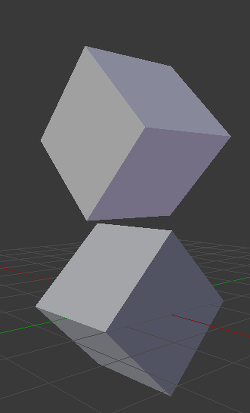To avoid it, some extra planes need to be tested as separators, these planes are the cross product between the edges of polygon A and the edges of polygon B

So the final algorithm is something like:
var overlapping = true
for p in planes_of_A:
var all_out = true
for v in points_of_B:
if (p.distance_to(v) < 0):
all_out = false
break
if (all_out):
# a separating plane was found
# do not continue testing
overlapping = false
break
if (overlapping):
# only do this check if no separating plane
# was found in planes of A
for p in planes_of_B:
var all_out = true
for v in points_of_A:
if (p.distance_to(v) < 0):
all_out = false
break
if (all_out):
overlapping = false
break
if (overlapping):
for ea in edges_of_A:
for eb in edges_of_B:
var n = ea.cross(eb)
if (n.length() == 0):
continue
var max_A = -1e20 # tiny number
var min_A = 1e20 # huge number
# we are using the dot product directly
# so we can map a maximum and minimum range
# for each polygon, then check if they
# overlap.
for v in points_of_A:
var d = n.dot(v)
if (d > max_A):
max_A = d
if (d < min_A):
min_A = d
var max_B = -1e20 # tiny number
var min_B = 1e20 # huge number
for v in points_of_B:
var d = n.dot(v)
if (d > max_B):
max_B = d
if (d < min_B):
min_B = d
if (min_A > max_B or min_B > max_A):
# not overlapping!
overlapping = false
break
if (not overlapping):
break
if (overlapping):
print("Polygons collided!")
This was all! Hope it was helpful, and please give feedback and let know if something in this tutorial is not clear! You should be now ready for the next challenge… Matrices and transforms!